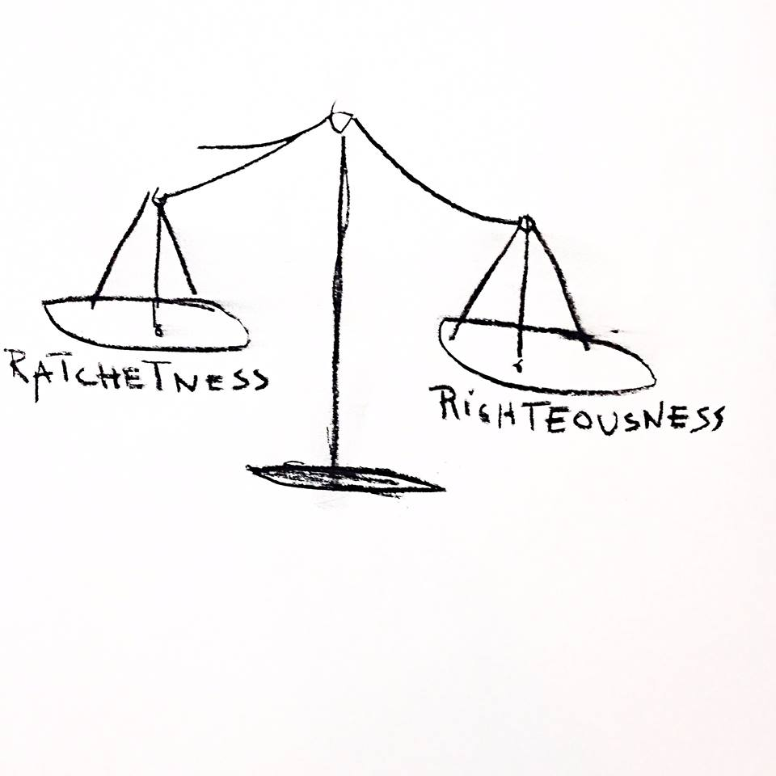
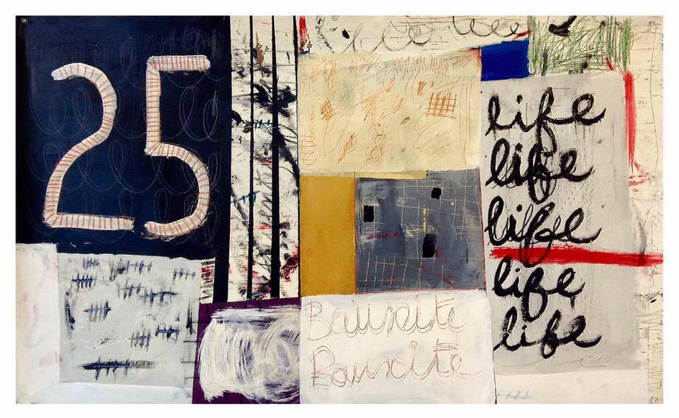
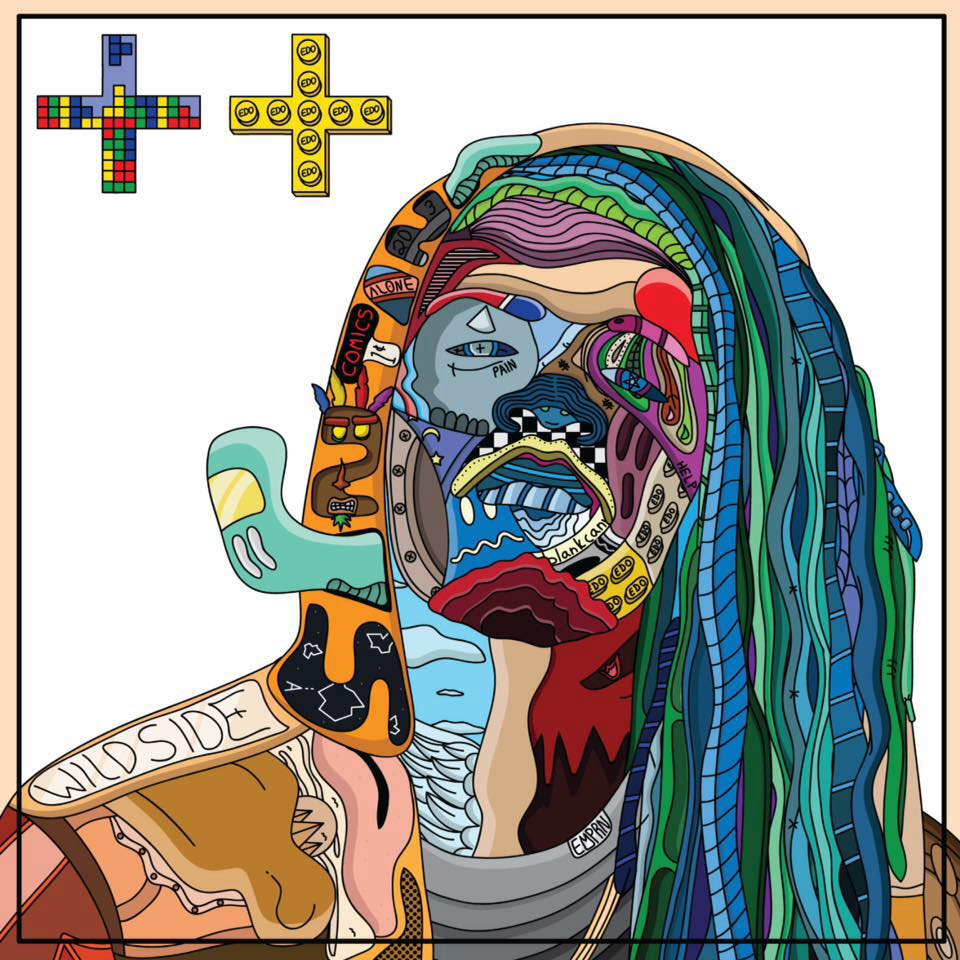
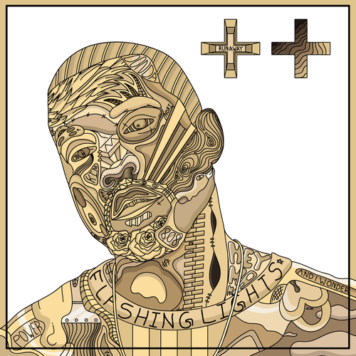
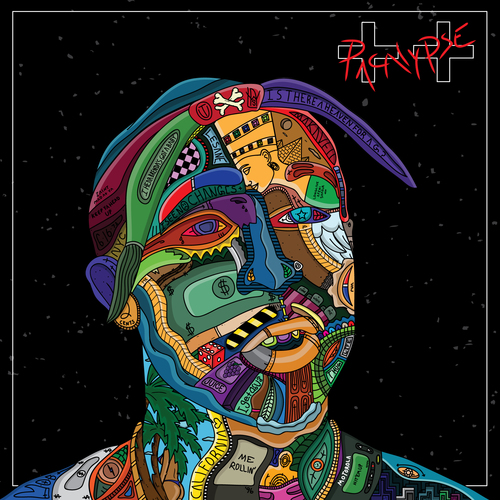

Q&A: EDO & OLIVIER
Olivier Jean-Daniel Souffrant is a portrait of an artist as a young man. If you were to pluck Olivier from modern times and send him back in time to 1920’s Harlem, he would fit right in. Surely his work is inspired by Basquiat, but not in the way most people would think. The homage to Basquiat is not an allusion, but an honest snapshot of the inner workings of his mind translated on the canvas, whether it be it a fleeting thought, a word, color block, or a sketch or doodle. There’s a certain raw element in his approach to his work that you can see in his stroke and in the way that he interacts with the canvas. It’s finished, yet a work in progress. It’s what happens when minimalism meets collage, and when an old soul lives in modern times.
AMFM: How did you get into making art, was it something you have always done or wanted to do? What were some of your earliest art memories?
OLIVIER: Growing up, my dad was an artist and an illustrator at some point, and my brother drew and sketched constantly. Early on, I got inspired by him and started copying the things he would draw. Coming home from work, my mom would also bring me Disney coloring books, paper and crayons. I didn’t really take art seriously at first, but when I understood its importance, and how it can significantly impact the way we understand things in our society, I took it seriously.
AMFM: You have a very distinct style and incorporate text, images, scribbles and work colorfully, what are some of your themes you like to explore in your work and why are they of importance to you?
OLIVIER: I like facts and history. I try to incorporate those as much as possible in my paintings and drawings. I ultimately want to leave a body of work that is appreciated in our contemporary time, but also a body of work that the next generations will be able to look at and feel a certain level of connection to.
AMFM: Your work seems to reminiscent of this past renaissance period for black art, and in Chicago it feels we are seeing this rise of black creatives. How has this renaissance, Chicago, and your life as a black male influenced you as an artist and your work?
OLIVIER: Yes, I feel like there is a creative renaissance going on in Chicago. There’s always something buzzing during the weekends whether it’s an art show, listening party, or local fashion show there’s always something going on. So I’m always surrounded by a constant stream of creative energy, and capturing the mood of some of those events, and putting them on canvas or on a paper. I also get inspired a lot by my Caribbean roots. Being black is hard in the States, it’s always been hard. It’s even harder I feel being a black creative in this country.

Edo’s mission is infinite and grand, and he exudes this through his art. His work is a nod to the greats, specializing in intricate and colorful portraits of inspirational artists and individuals like Muhammed Ali, Andy Warhol, and late Chicago DJ Timbuck2, and they tell a story through images and words filling in their faces. He did this as a way to honor those lost in his own life. A member of the Treated Crew in Chicago, Edo’s passions do not simply lie in art, but in design, whether it be graphic or clothing, or in music, it is clear to see the historical and popular culture influence within Edo’s work.

AMFM:Your most recent works, The Infinite Inception I/II are a part of a two part series, one dedicated to your mother, and the other to your late father, why was this something you sought to explore with your work and how have they influenced you as an artist?
EDO: Well honestly, my parents didn't necessarily influence me as much as I would've wanted them to, if anything, my mom has been a huge support you know. She sacrificed a lot for me. My father was never really around, which also really motivated me to go extremely hard at what I do to show him that I belong here. I'm not a mistake you know. When all the smoke clears "metaphorically speaking," I wouldn't be here without my parents, so my showcases were based on that. A dedication to both of them for creating me. I love my parents, both of them. They've made some mistakes in their lives but they're still my parents and I think that they did alright. I think I turned out okay. It shows through the art, for sure!
AMFM: Your father passed away and you said you channeled that all into your art. You fueled the emotions you were feeling into portraits of other lost famous individuals. How did this evolve the work, or change how you viewed it and that emotion you put into it? How was creating art during this monumental loss a point of catharsis for you?
EDO: I think my work evolved tremendously. I find beauty in pain you know, as crazy as that might sound initially. We, as artists, honestly need to feel certain emotions to capture certain mediums in art. It helps. It was very tough for me to do some of those pieces but it also helped me release built up pain and frustration. Art has always done that for me and it really showed up when I needed it the most.
 
AMFM: How does popular culture and hip hop culture find it's way into your work and how do you think this changes the way people interact with the work? Where do your own personal art interests and influences collide with popular culture and hip hop? What are some things you like to explore with your work?
EDO: I love music! It's pretty much art with voice and beats you know, another outlet to get out what you want to say. The culture and scene is something I don't necessarily try to portray with my art, but it definitely has some influence on certain pieces. I'm usually listening to that type of music when I'm designing too, so subconsciously it creeps its way in there every now and then. As far as how I think people interact with it, I feel as though everybody has a certain take on my art you know. All feedback has been amazing, but even if it wasn't I don't think that would necessarily change anything you know. I'm humbled by all the love my art gets, truly, but either way it goes, my love for it won't change. My own personal interests and influences are really eclectic. The culture definitely plays a part, but more of a smaller part due to me being all over the place with genres and things of that nature. As far as what I want to explore with my work, that's simple - everything. I want to touch base with everything. I want to be free. That's what art is to me; freedom. Freedom to explore the unknown. That's my truth. Pure freedom, infinitely.FOR MORE FROM OLIVIER & EDO:
OLIVIER | INSTAGRAM
EDO | INSTAGRAM
EDO | WEBSITE